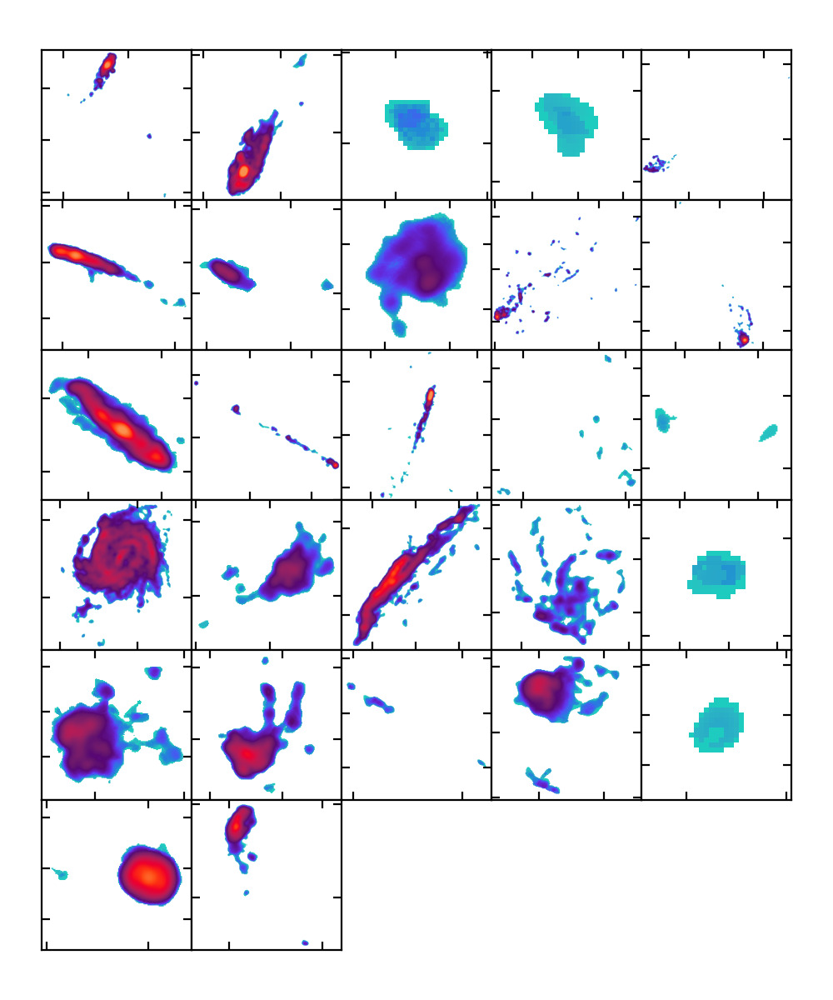
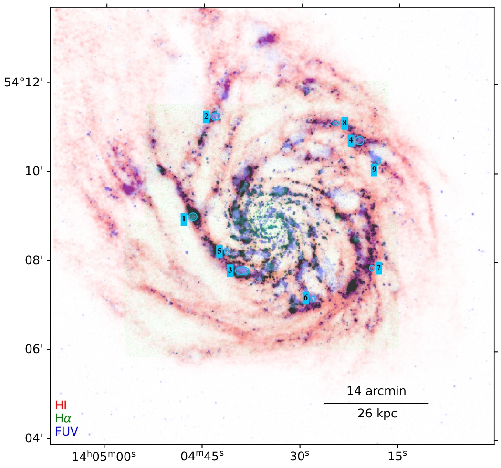
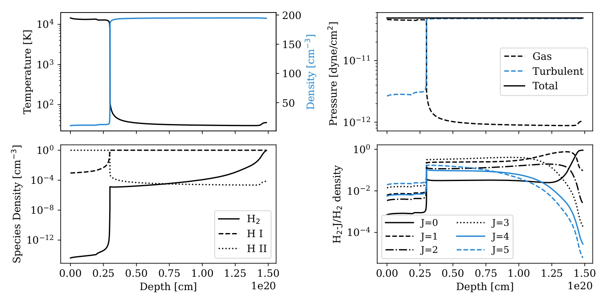

AASHIYA ANITHA SHAJI
About Me
I am a postdoctoral researcher at the Astronomical Institute of the Czech Academy of Sciences in Prague, where I work as part of the ALMA-JELLY Collaboration.
My research focuses on understanding the physical processes regulating star formation across various galactic environments, spanning internal stellar feedback in isolated galaxies to environmental drivers like ram pressure stripping in nearby galaxy clusters.
Contact: aashiya.shaji@asu.cas.cz
🌌 Background image: The Milky Way over Alcañiz, Spain (Aug 2026) — Photo credit: David Kománek.
Curriculum Vitae
Publications
Recent First Author Publications:
Projects

Analysis of ALMA-JELLY Galaxies
Ram pressure stripping is a primary environmental driver of galaxy evolution in dense clusters, where high-speed passage through the intracluster medium (ICM) removes gas and quenches star formation. ALMA-JELLY is an ALMA Large Program (2021.1.01616.L; PI: P. Jáchym) designed to trace cold molecular gas by mapping CO(2–1) line transitions across stripped jellyfish galaxies.
Focusing on ESO 137-001 in the Norma Cluster, I combine multi-configuration ALMA interferometry with single-dish data to recover molecular gas emission across all spatial scales. By incorporating multi-line submillimeter observations (including APEX transitions) and mid-infrared dust tracers, I apply non-LTE radiative transfer modeling and spatial correlation techniques to examine how extreme hydrodynamic stripping alters ISM physics and regulates star formation efficiency.

Investigating Galactic Fountains in M101
Galactic fountains are a key stellar feedback mechanism driven by clustered supernovae in OB associations. These energetic events heat gas to coronal temperatures (~106 K) and blow out bubbles in the interstellar medium, sweeping away surrounding neutral hydrogen (H I). If the outflow velocity is below the galaxy's escape velocity, this gas rises above the disk, cools in the halo, and eventually rains back down.
While spiral galaxies consume gas through steady star formation (~2 M☉ yr-1), this fountain cycle temporarily regulates gas availability on timescales of tens to hundreds of megayears. To observationally map this feedback loop, I developed a multi-wavelength scoring scheme using VLT H I, GALEX FUV, and SITELLE Hα data to pinpoint nine active fountain sites in face-on spiral galaxy, M101.

CLOUDY & Bayesian Modelling of High-Redshift (z > 3) H2-DLAs
Damped Lyman-α (DLA) absorbers containing molecular hydrogen (H2) probe the dense, star-forming phase of the interstellar medium in high-redshift galaxy progenitors. As part of my Master's thesis, I conducted detailed photoionization modeling and Bayesian inference on six of the most distant known H2-DLAs (3 < z < 4.5) observed via high-resolution quasar spectroscopy.
Moving beyond traditional constant-density approximations, I constructed a constant-pressure multiphase cloud model using CLOUDY, simultaneously constraining atomic/molecular species, H2 rotational populations, and CI fine-structure levels. This analysis yielded tight constraints on local physical conditions, including interstellar radiation fields, cosmic ray ionization rates, and gas pressures, revealing signatures of active in situ star formation in the early Universe.